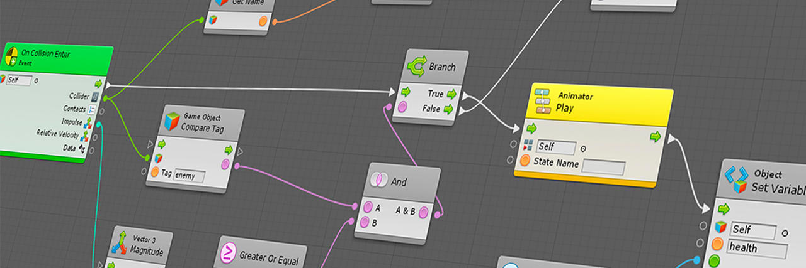

Home
¡Bienvenido a nuestro portal de juegos y videos!
Explora nuestra amplia colección de juegos emocionantes creados con la poderosa tecnología de Unity. Sumérgete en mundos virtuales, desafía tus habilidades y diviértete al máximo.
Además, también te ofrecemos una selección de los mejores videos de YouTube relacionados con juegos, incluyendo trailers, gameplays y más. ¡Prepárate para una experiencia de entretenimiento sin igual!
Noticias
22/07/2023
¡Gran noticia para los desarrolladores de Unity! Bolt, la herramienta de scripting visual que permite crear lógicas para juegos y aplicaciones sin necesidad de escribir código, ahora está completamente integrada en Unity.
En mayo de 2020, Unity adquirió Bolt y ha trabajado para realizar la transición técnica de la herramienta a su plataforma. Ahora, Unity ofrece Bolt de forma gratuita para todos los usuarios, sin importar su plan, incluyendo la Personal Edition, planes para estudiantes y de educación, así como suscripciones Plus, Pro y Enterprise.
Además, Unity ya está trabajando en la próxima versión de Bolt, Bolt 2, que promete mejoras en capacidad, escalabilidad, rendimiento y facilidad de uso. Cuando se lance, Bolt 2 estará disponible sin costo adicional para todos los usuarios de Unity.
La compañía tiene como objetivo proporcionar una experiencia de scripting visual en todos los proyectos, sin importar la arquitectura, y busca mejorar la sinergia entre sus herramientas basadas en nodos para una programación visual unificada en todo el motor.
Si deseas obtener más información sobre Bolt, puedes visitar la página de Bolt en la Asset Store o el blog de Unity.
Nota completa aquí
06/07/2023
¡Emocionante noticia para los desarrolladores de videojuegos! La versión 4.1 de Godot, un motor de juegos de código abierto y gratuito, ha sido lanzada.
La nueva versión trae consigo mejoras significativas en el rendimiento, la estabilidad y el editor, brindando una experiencia de desarrollo más fluida y eficiente.
Además, se han realizado mejoras en el lenguaje GDScript y se ha ampliado el soporte para C# y GDExtension, lo que permitirá a los desarrolladores aprovechar aún más posibilidades en la creación de juegos.
En el ámbito de la inteligencia artificial, la navegación por IA ha sido perfeccionada para crear mundos virtuales más realistas e inmersivos.
El renderizado 3D también ha sido objeto de mejoras para lograr gráficos más impresionantes y un mayor nivel de detalle en los juegos.
Además, la versión 4.1 ha corregido más de 900 problemas reportados por los usuarios, gracias al trabajo de más de 300 colaboradores.
Para descargar la versión 4.1 de Godot, puedes visitar la página oficial de Godot o el canal de YouTube de GDQuest.
Es importante destacar que Godot depende del apoyo financiero y comunitario para continuar mejorando y ofreciendo nuevas características a sus usuarios.
¡Y eso no es todo! Godot ya está trabajando en futuras versiones, como la esperada 4.2, que se lanzará en cuatro meses, prometiendo aún más emocionantes mejoras y funcionalidades para los desarrolladores.
Nota completa aquí